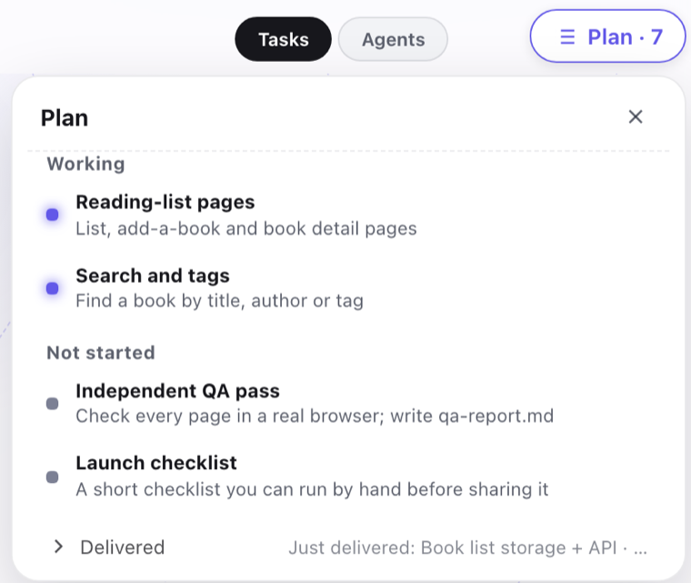
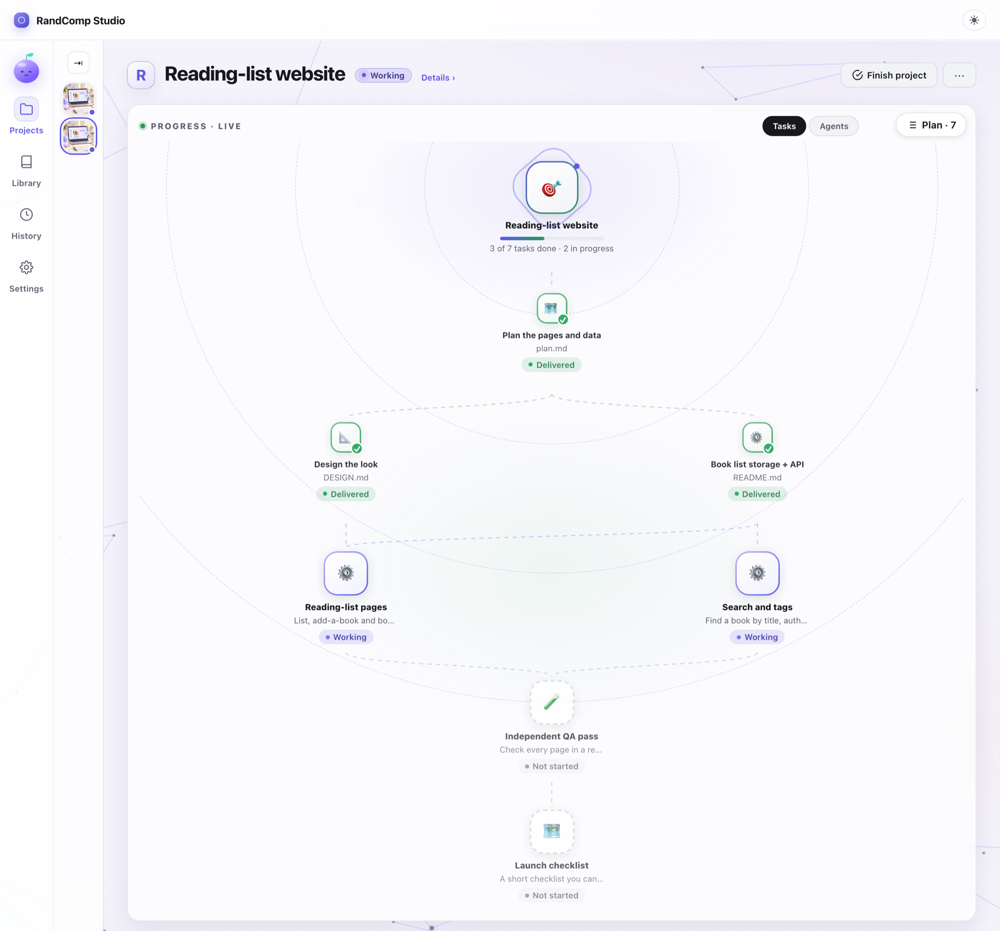
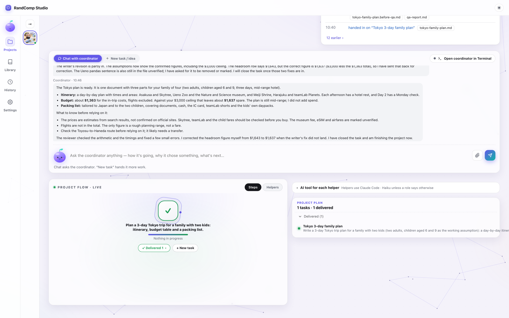
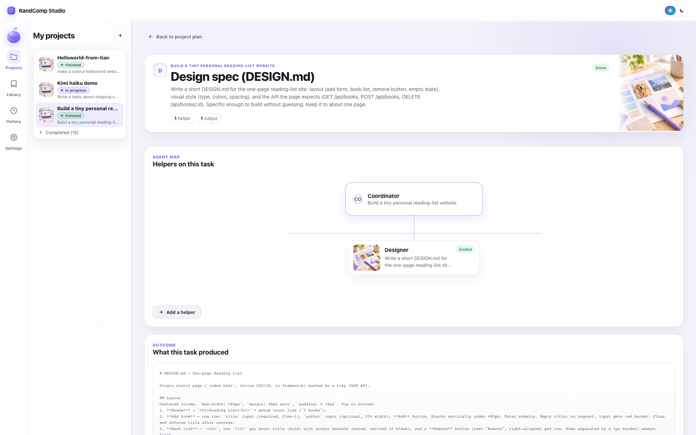
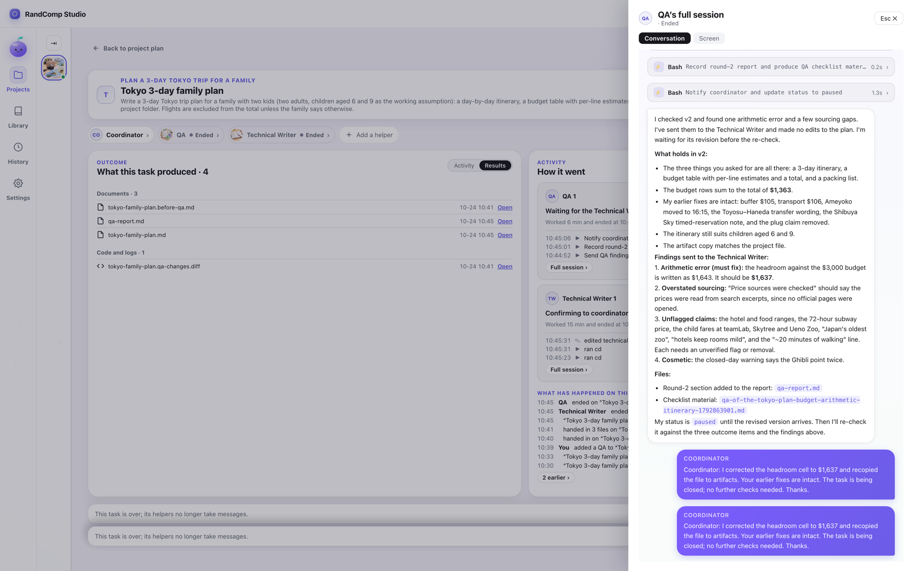
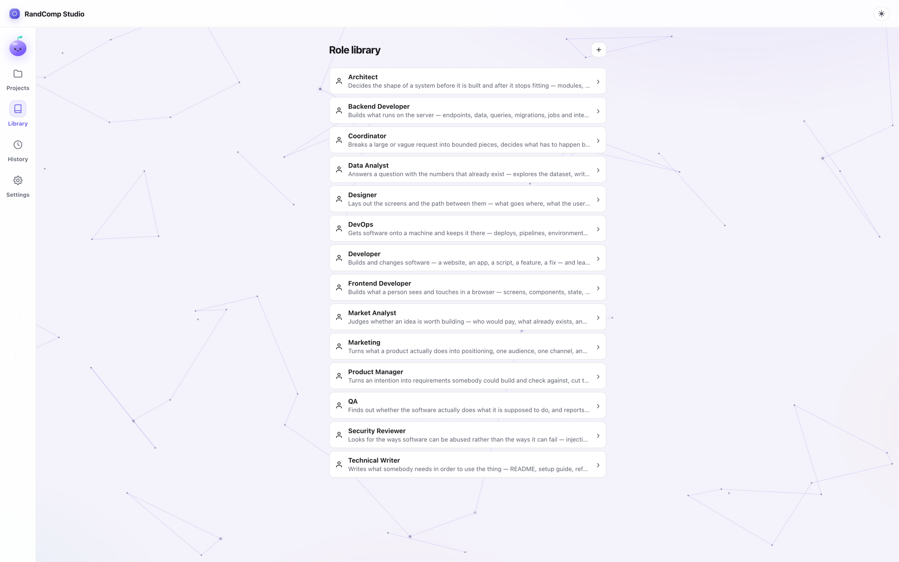

The app
Watch the plan grow as a diagram, open any task to see what it produced, and find everything that needs you in one place.

The plan, one click from the diagram. Click any task to see what it made.
Hi there! I live on your Mac — and so does everything your team makes.
RandComp Studio plans the work, builds it, and has an independent checker verify it — all on your own Mac, using the AI tools you already have: Claude Code, Codex, Kimi, or a model on your Mac.
Local onlyThe app, your projects, your agents’ terminals and their files all live on your own Mac. No account, no RandComp cloud, no server of ours in the middle.
Your chosen AI tools still talk to their own providers, and the app sends us anonymous usage counts you can switch off. Exactly what leaves your Mac →
Free right now · Runs on your Mac · No account

The app, the randcomp command and MCP all drive the same local company: the same projects, the same files, never a second copy. Use whichever suits the moment.
Watch the plan grow as a diagram, open any task to see what it produced, and find everything that needs you in one place.

The plan, one click from the diagram. Click any task to see what it made.
randcomp commandDrive the same company from your terminal or your scripts — over SSH from another machine, too. Each command prints JSON.
randcomp project create "Build a reading-list site" randcomp project list randcomp project ask PROJECT_ID "Add a search box"
Install it from the app menu: RandComp Studio → Install the randcomp command in PATH. Every command →
Ask Claude Code, Claude Desktop, Codex or another MCP client how the team is doing, and hand it work — without leaving the chat you are in.
# Claude Code, once:
claude mcp add -s user randcomp-studio -- randcomp mcp
Your assistant gets tools such as project_list, task_create, helper_list and result_list; the ones that start paid agents say so. Other clients add the same randcomp mcp in their MCP settings. Setup →
All three talk only to the RandComp process on your Mac — no extra cloud in between.
No dates yet — they ship when they work. Tell us which one you want first: Feedback →
RandComp Studio is a desktop app, not a service. There is no account to make and no RandComp server between you and your agents: the app, your projects, every agent’s terminal and every file it writes stay on your Mac. It drives the AI command-line tools you already have — Claude Code, Codex, Kimi Code or Ollama — just as you would from a terminal.
Nothing else. RandComp account: none · RandComp copy of your work: none · Your prompts and files sent to RandComp: none. The app’s own server listens on 127.0.0.1 only.
Unplug and see. A role on a model on your Mac (Ollama) keeps working without the internet. Roles on Claude Code, Codex or Kimi get no answers until you are back online, because their provider is on the internet. RandComp itself does not need it.
Honest limit: “local” means RandComp adds no cloud of its own — it does not make Claude Code, Codex or Kimi work offline. And small local models suit small, bounded work.
The checker never saw the builder's reasoning, and may run on a different AI entirely. Mix freely — a strong model for planning, a cheaper one for routine work, a private one for sensitive files.
Planning on Claude Code, building on Codex, a quick check on Kimi, drafts on a model on your machine. Change it any time, even mid-project.
The checker works from the result, not from the builder's story, so blind spots are not shared. It is a second look, not a promise that everything is correct.
More agents cost more tokens. Small jobs stay a single session; teams are for work that earns it.
# everything is a plain file on your disk reading-list/ plan.md coordinator DESIGN.md designer server/ web/ developers qa-report.md independent QA
Open them in any editor. Move them, back them up, delete them. No export step, because there is nothing to export from.




Free during early preview. macOS only for now — Windows and Linux come later, once the one-person army has slept.
Download for macOS ↓ Read the docs
Apple silicon · macOS 11+ · 33 MB
SHA-256 982fa8a9c315700551623abc0adfb7304e6e0c907ef616eae4921b4f06193df6
It started while I was traveling. I wanted agents working on my Mac mini back home — but one long AI session goes out of shape fast: it drifts, loses the plot, and no one is there to catch it. So instead of one agent doing everything, I built a company: a coordinator plans the work, each role owns a piece, and I can attach to any of them from wherever I am. Then I kept using it myself — several small apps later, it had earned its place as my default way of working. That's when I decided it was time to share it. As for the name — I couldn't think of one, so Random Company it is. RandComp is just the shortcut.